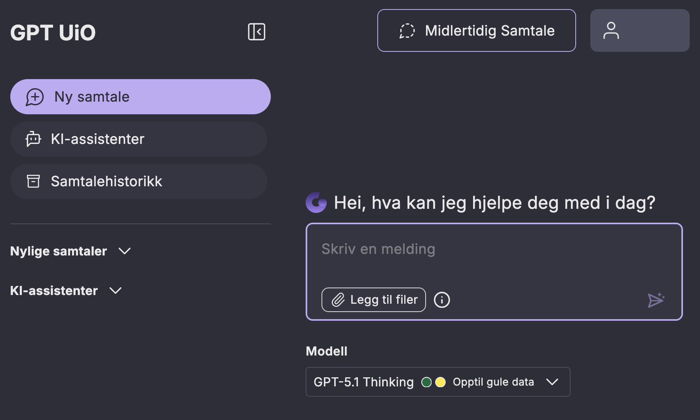
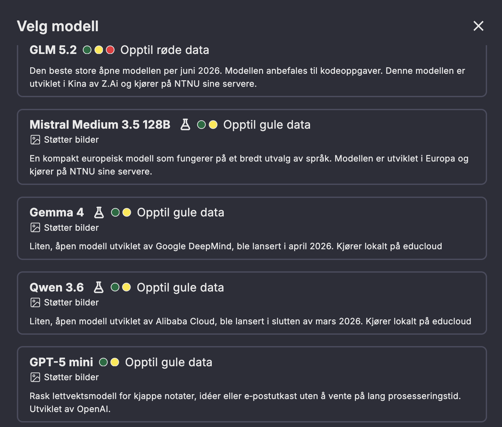

Grunnkurs KI
Version
Version
Welcome to the foundation course in generative AI!
Artificial intelligence is an advanced technology that is easy to use, but hard to use well. This is an introduction to what artificial intelligence is, and how you can use it in a good and responsible way. The course aims to give all employees basic training in artificial intelligence, so that they can safely explore how AI can be used in their own work tasks.
The course is developed for administrative staff, but the topics are fundamental and relevant to all employees who want to learn about how to use artificial intelligence.

Illustration: Tina Morønning Ruud
Imagine that you could have a digital sparring partner who always has time and who can quickly analyse, summarise, translate, simplify or retrieve relevant information for you. Artificial intelligence can be this digital sparring partner.
Den jobber raskt og kan behandle store mengder data, men den har hverken din fagekspertise eller erfaring fra UiO. Den har heller ikke emosjoner, etisk eller moralsk dømmekraft, faglig skjønn eller bevissthet rundt IT-sikkerhet. Derfor skal du alltid bruke din egen kompetanse til å vurdere hvilke oppgaver som er trygge å bruke KI til, vurdere KI-svar og ta det endelige ansvaret for beslutninger. Du må også huske at som ansatt i staten forvalter du ressurser på vegne av samfunnet. Da må du være bevisst dine valg rundt ny teknologi og ta den i bruk på en måte som ivaretar tilliten mellom forvaltningen og samfunnet.
We hope this course gives you the competence to use artificial intelligence in a good and responsible way in your job.
The course contains theory, reflection exercises, bonus content and practice exercises.
The course can be taken all at once or split into two parts. If you want to take the course in two parts, we recommend taking chapters 1-3 as part 1 and chapters 4-6 as part 2.
The whole course takes about 60 minutes to complete, not counting the practice exercises in the final part.
The estimated time is based on the number of words, and does not account for extra time spent on reflection and practice exercises.
Enjoy the course!
In this first chapter you will learn about the concepts of generative AI, language models, AI assistant and AI agent. Once you understand these concepts, you will have laid the first foundation for learning more about how to use AI in a good, responsible and safe way.

Illustration: Tina Morønning Ruud
Artificial intelligence (AI) is technology that can perform tasks we usually associate with human intelligence. This could be, for example, producing and understanding text, recognising images, interpreting speech or analysing numbers.
For artificial intelligence to be able to perform this type of task, it trains on examples from text, images or sound. By looking at examples, the AI learns to recognise patterns and connections, and can eventually:
This is called machine learning and means that the technology learns from data.
AI is actually nothing new. Researchers began working on it as early as the 1950s, and in 1956 AI was established as a research field in its own right. What is new today is how powerful and accessible AI has become in recent years. When ChatGPT arrived in 2022, it was a clear turning point. Instead of “dumb chatbots” that could only answer very simple questions, we suddenly got a tool that could:
This development has been possible because of three important things:
Humans learn through experience. Machine learning is based on the same principle, just for computer programs. Instead of learning from experience, the program learns from data. When we have large amounts of data available, for example text, images or numbers, we can use machine learning to find patterns and connections that are difficult or time-consuming for humans to discover themselves.
Machine learning differs from traditional programming in how it solves problems:
An example of traditional programming is a program that calculates credits based on the number of passed courses and the weighting of each course.
In machine learning the rule is unknown, and it is what we want to learn.
When we talk about AI in everyday life, we usually mean generative AI. UiO GPT, Microsoft Copilot and Gemini Notebook are examples of this. Generative artificial intelligence is called “generative” because it creates (generates) new content based on what it has learned previously. You type in a prompt and the AI generates a suggested answer or piece of content.
Det finnes flere typer KI. I dette kurset skal du lære mest om store språkmodeller, som en en type generativ KI. Store språkmodeller er selve motoren i mange KI-tjenester du bruker, og dette skal du lære mer om litt senere i kurset.
Did you know that in addition to generative AI, there are two other types that are very common? Namely discriminative and predictive AI.
Here are some examples of each of these.
Generativ KI
Generative AI produces or generates new content such as text, images or sound.
Example: An AI chat that generates meeting minutes based on your meeting notes.
Diskriminativ KI
Discriminative AI sorts and recognises things that already exist.
Example: An AI system that can work out whether a photograph is of a dog or a cat.
Prediktiv KI
Predictive AI looks for patterns in data that can say something about the likelihood of events.
Example: the weather forecast
You may have used an AI assistant in UiO GPT or Gemini Notebook. An AI assistant is typically an AI chat with a specific role and “personality”. An AI assistant can, for example, “act” like an experienced meeting minute-taker, code checker, exam helper or study adviser.
You achieve this by giving the AI assistant predefined instructions about how it should behave, what it should focus on, and how it should present the answer. In addition, you can upload material such as PDF documents, plain text or web pages containing the (subject) material your assistant should use as the basis for its answers. In this way, the assistant gets its own reference library that it uses to generate an answer. The result is a more accurate “chatbot” that has expert knowledge in a specific field and makes the answers more targeted.
A very useful feature is that you can save your assistants and use them over and over again, as well as share them with others.
Both have a language model at their core, and the difference is not that great technically. When you interact with an AI assistant, it will look quite similar to any other AI chat. The AI assistant just has this extra layer of predefined instructions for how it should behave.
KI chat
KI studieveileder assistent
An AI agent is easily confused with an AI assistant, but an AI agent is a far more powerful tool than an AI assistant. An AI agent does not just tell you how to solve a task, it also carries out the task for you. For example: instead of typing a task into a chat window, copying out the answer, and pasting it into the document you want, the agent can edit the text directly in the document for you. An AI agent is therefore an advanced AI assistant that can perform actions in IT systems, and in that way be a very effective tool.
AI agents are usually built for one or more specific purposes and can, for example:
Because AI agents can perform actions on their own, they require more competence and caution when used than an ordinary AI chat.
At UiO, AI agents are not yet offered to the same extent as AI chat, precisely because they are more demanding to use, and incorrect use can have serious consequences.
Even so, AI agents are already in use at UiO to a certain degree. One type that is used is so-called code agents. They are used by IT staff and others who work with coding. But they can be used for much more than this. They can, for example, read files in a designated folder and perform actions directly on them. Going forward, such features will probably become more common, also in other digital tools we use.
In this chapter you have learned the most central concepts in the language of AI. Before you move on to chapter 2, you can test what you have learned about the concepts.
In the next chapter you will learn about large language models and what can go wrong when you start using them.
As you have just learned, large language models are the very engine of many AI services. Now we will take a closer look at how large language models produce text and what we should be aware of. This knowledge is necessary in order to use AI in a safe and responsible way.

Illustration: Tina Morønning Ruud
A type of simple language model you are probably familiar with is the dictionary on your mobile phone. It suggests the next word based on the text you have written so far. The model in your phone is trained on texts gathered from the internet, and the suggestions are the most likely words based on the patterns the model has learned from the texts. The suggestion is conditioned on the text you have written, and this text is called the context.

Suggested continuations of the text “I would like a cup of”. |

Suggested continuations of the text “I would like a glass of”. |
Large language models are far more advanced than the dictionary on your phone, but they work in fundamentally the same way. A language model is a mathematical model that builds up its answer one word at a time, conditioned on the context. Each word is drawn with a little randomness. The model stops when it “believes” the answer is complete.
When we talk about large language models, we often say that everything we give the models to work with is context. The context can be a question or a prompt, but also documents, images or other things we upload to the model.
Large language models generate text that is credible and that resembles the texts they are trained on. Nevertheless, they have no relationship to truth [Hicks] and therefore have no reliable knowledge of what is true. In other words, this means that what language models deliver to you is not necessarily true. You must always check this yourself!
Sometimes it matters little which next word the language model chooses. Other times the choice is absolutely decisive for whether the answer is right or wrong.
Imagine that the model is to complete the sentence: “The colour of the house is …” Possible continuations could be “red”, “blue” or “grey”. In a sentence like this, it is not obvious which word is “right” or “best”, because several options fit. Nor does it matter very much which one is chosen.
But if you ask the model: “What is the capital of Norway?” Then you expect a correct answer. Here it matters which word the model suggests.
In both cases the model chooses the most likely word based on patterns in text it has learned from, and not certain factual knowledge. If you expect a knowledge-based or factual answer, there is therefore a risk of error. This applies especially if the training basis is incomplete or biased.
The fact that language models have no reliable knowledge of what is true makes them vulnerable to deliberate manipulation of training data. This type of manipulation is often called “language model poisoning”. Actors can publish misleading information so that the models will be trained on it. As a result, the models can give answers that are manipulated and do not match reality.
One example is when the BBC journalist Thomas Germain manipulated, among others, ChatGPT and Gemini into answering that he had been crowned a sausage-eating champion. [Germain] This is a fairly harmless type of manipulation, but it nonetheless highlights the models’ weakness.
A more serious example is an experiment by the Swedish researcher Almira Osmanovic Thunström. She investigated whether AI services would spread medical claims from obviously fabricated articles. She therefore published two fabricated articles about a fictitious diagnosis in the preprints.org archive. After a short time, AI services began to refer to the fictitious diagnosis. [Stokel-Walker]
Because large language models cannot distinguish between true and false, they can make up things that are not correct. If you have heard someone say that AI and language models hallucinate, this is what they mean.
Language models can make things up or mix things together in different ways. Here are some examples:
It is a major problem that language models often make things up with great confidence. They do not say: “I am not sure, but …”. Instead they present misinformation with the same “conviction” as correct information. Therefore you cannot trust that an answer is correct just because it comes across as “self-assured”. You must always check facts against a reliable source.
There are many reasons why the models make things up. Here are some of them:
Many large language models can now search the internet to obtain up-to-date information. But that does not guarantee that the answer is correct. This is because the language model still has to interpret and summarise the information it finds. It does this in the same way as always, by generating text based on patterns. The model can therefore still make things up, even when it has access to correct information from the web.
When the Norwegian Police University College was to decide how much time lecturers should be given to prepare for teaching, misinformation was used as the basis for the decision [Svarstad]. During the preparations for the review, Copilot was used to gather information about preparation time at other universities and colleges. The problem was that Copilot did not find such information online, and therefore simply made up an answer.
When you use a language model, you interact with it through a chat system. The language model itself does not remember earlier messages in the conversation or earlier conversations you have had with it. That is what the chat system does. The chat system shows you the conversation you are having and passes it on to the language model. What you should note here is that every time you write a new prompt or a new question in the chat, the chat system sends the entire conversation to the language model again. This is because the language model itself cannot remember what you have asked about.
So it is the chat system that “remembers” what you have written and builds up the context, while the language model only looks at the text it is given at that moment and calculates probable next words. This is important to be aware of because the length of the context affects how much of the conversation the model actually “sees”.
When we say that the chat system sends the entire conversation to the language model, this is a simplification: In practice, chat systems have different ways of reducing the information they send to the language model.
Even so: it is never only the last message of a conversation thread that is sent to the language model. Depending on the language model’s capacity and the chat system’s automatic filtering, all or part of the preceding messages in the conversation thread are sent together with your last message.
Long conversations can “confuse” the model, so that it gives poorer answers. One reason for this can be that the entire context does not fit. In long conversations there is also a greater chance that the text contains contradictions or other things that make the message unclear. Philippe Laban et al. found that language models answer best when they are given all the information in a single prompt. [Laban] An important reason for this was that wrong answers from the model remained in the conversation.
It is especially important to start a new conversation when you change topic. Imagine that you have asked an AI questions about UiO’s financial regulations. If you then ask a question about how to format figures in Word, the model will answer the question in light of UiO’s financial regulations. That does not make sense, and you will get better answers if you start a new conversation.
In addition, language models are bad at distinguishing between text the user has written and text they have generated themselves. Therefore you should make sure that wrong answers do not remain in the conversation.
We have learned earlier that it is an inherent property of language models that they make things up. Another inherent property is that language models have built-in biases. There can be many types of bias. We will look at some of them here.
As mentioned, large language models are trained on texts from the internet, but there are many texts they do not have access to. For example, they do not have access to information that requires a login, or that is behind a paywall. They also have limited access to printed sources. This creates limitations on what the models can learn and has different effects for different use cases. One example of this is that the models can be weak on very specific subject knowledge within a given research domain.
Another type of bias stems from inequalities in our society, and is therefore also reflected in the digital information we produce. This can involve biases related to ethnicity, gender, religion or other factors, and is very important to be aware of when working with suggestions and text from a language model.
Suppose a language model is trained on many old job advertisements where “leader” is referred to as “he” more often than “she”. When you ask the model to write a text about “a typical leader”, it will then have a higher probability of using words like “he”, “man” and men’s names.
The model has no opinions about gender; it merely reproduces the patterns that already existed in the texts it was trained on.
Today’s language models have a tendency to agree with you. This can lead to the language model telling you that you are right about something that is not correct.
To avoid confirmation bias, you can turn the question around, that is, also ask about the opposite.
In this chapter you have learned how large language models produce text and what weaknesses they have when they do this. Before you move on to chapter 3, you can test what you have learned.
Now that you understand how language models work and what their limitations are, in the next chapter you will learn how to use AI safely and effectively in practice.
To master AI, you need to get good at prompts.
A prompt is the instruction or question you give a language model. Prompts are written into the chat you use to communicate with the language model. What is important to note is that the quality of your prompt is directly related to the quality of the answer you get.
In this chapter you will learn how to create good prompts, and how to check the quality of the answers AI gives you.

Illustration: Tina Morønning Ruud
The language model is good at guessing what the answer should contain, but it cannot read your mind. With a few simple steps you can help the language model give answers you are more satisfied with. Feel free to use all of these principles when you write your prompt.
Here are some simple examples of prompts that could be better, and suggestions for how you can improve them.
Now try improving the prompts from the previous page in GPT UiO yourself. This will give you a good indication of how the language model responds to the prompts you give.
Once you have learned the principles for good prompts, you can also apply various prompting techniques. You can use the techniques individually, or combine them.
Create a work plan for how the AI should solve the problem. This gives more well-considered answers and is especially useful for complex tasks.
Example
You are an experienced course developer at a university. I am going to hold a 2-hour introductory course in using GPT UiO for staff at the University of Oslo who are beginners.
Think step by step before you answer:
First show your step-by-step thinking as bullet points, and then a clean proposal for a course plan.
Ask the AI to explain why it gave the answer it did. A brief justification makes it easier for you to assess whether the answer is relevant and trustworthy.
Example
I am going to organize a workshop about […]. Suggest some activities that can help the participants with the task they need to solve. Give a justification in 3-5 points for how the activities can help the participants.
The first answer is rarely perfect, and that is completely normal. Build on the answers in a conversation.
Example
First prompt: “Write a draft email about the new booking system.”
Follow-up 1: “Make it more concise, max 3 paragraphs.”
Follow-up 2: “Add a sentence about where they can get help.”
As we learned in Language models’ memory long conversations or a new topic can confuse the model and give poorer answers.
So start a new conversation if you notice that the answers are starting to drop in quality.
If you have spent time building a good prompt with the techniques and principles we have just learned about, it is worth holding on to. Especially if you use AI to solve the same type of task repeatedly. You can achieve this by saving the prompt as a pre-prompt in an AI assistant, for example in GPT UiO’s AI assistants which we will return to later in the course. You will then have a specially tailored conversation partner that can be used over and over again.
Now that you have learned about and can apply some techniques for good prompts, can you then trust the answer AI gives you?
Generative AI is not simply “reliable” or “unreliable”; it depends on what you use it for. As we have already learned, the language model has no reliable knowledge of what is true, nor any memory. A better question might therefore be: In which situations can you use AI without it entailing significant risk? And what can we do to reduce the risk?
A general rule is that artificial intelligence is best suited to tasks where errors do not involve significant risk.
If errors can have serious consequences, you must either
Below are examples of use with low, medium and high risk.
Lav risiko
If you are in control, or the consequences of errors are low:
Why is this low risk?
The chances of errors are smaller, and the consequences of errors are minor.
Measures to limit risk
Medium risiko
If the result is going “out into the world” or you use AI in areas where you lack expertise:
Why is this medium risk?
Errors here can lead to wrong decisions, errors in technical systems, inefficiency, or weakened trust externally.
Measures to limit risk
Høy risiko
If the material produced must be factually correct
Why is this high risk?
Here the potential for error is large, and any errors will have major consequences.
Measures to limit risk
We have now learned that a language model produces probable text, not truth. It has no reliable factual knowledge, no memory and has built-in biases.
In this course you have nevertheless been given some concrete tips and “safety rules” for how you can quality-assure content generated by AI. We summarize these here.
There is no single right way to prompt, and good prompting is a skill learned through trial and error. When you get an answer you do not like, try to identify what was missing in your prompt - and add it in the next iteration.
You now have a useful set of tools for using AI in a safer and better way. In this chapter we have learned how to assess and quality-assure answers from AI, and how you can use well-designed prompts to get better answers.
We have now laid the foundation for using AI safely. In the next chapter the topic is: responsible and sustainable use of AI.
You have now learned the most important fundamental concepts about AI and language models, and perhaps even more importantly: the limitations of the technology. In addition, you have gained a set of tools that can help you get good results from AI, and learned how to assess and ensure the quality of what AI gives you.
This is a good place to take a break if you are running low on time or energy. You have reached roughly the halfway point of the course.
In part 2 you will explore aspects related to sustainability and responsible use, and learn about the most important AI services at UiO, before it all wraps up with two sets of exercises that you can download and work on in the days ahead.
See you in the next part!
In chapter 4 you will learn about important ethical, environmental and legal considerations when using artificial intelligence. This knowledge helps us use AI in a responsible way.
Illustration: Tina Morønning Ruud
Artificial intelligence has costs that go beyond what we pay to use it. Using AI services carries both environmental costs and social costs.
Many of these challenges are not unique to AI. We find similar issues in the clothing industry, food production and other sectors. As individuals, we have limited control over how data centres are run or how suppliers treat their employees. But we have full control over how we use the technology in our own everyday lives. That is where we can make a difference.
On the following pages, we will take a closer look at what you as a user can do to contribute to more sustainable use of AI.
All IT services have a certain environmental impact, but AI services are especially resource-intensive. This is because the models require a lot of heavy computation. AI services have high electricity consumption, both to run the machines and for cooling. A lot of water is also used for water-based cooling of the machines. Both electricity and water are limited resources that should be used sensibly.
The costs of building data centres come in addition to the costs of using them. First, the land used to build data centres can come at the expense of nature and other construction projects, and once the data centres are finished they use enormous amounts of electricity. A lot of minerals and other limited natural resources also go into making the servers in the data centres. The large increase in the use of artificial intelligence means that AI suppliers are building new data centres at a rapid pace.
Even though AI is resource-intensive, there are some steps you can take to reduce the burden on the environment.
Be aware of when you use AI and when you can do without it. Try not to reach for AI for everything.
In several services, including GPT UiO, you can choose between several different language models, where some are large and some are small. The small ones are less resource-intensive both to create and to use. They can work well for simple tasks such as proofreading an email or getting suggestions for rephrasing sentences.
Long conversations require more resources. The longer a conversation becomes, the more resources the system uses, since the model has to process the entire conversation again for each prompt. Start a new conversation when the conversation starts to get long.
Training and using artificial intelligence also has social costs. Some AI suppliers use subcontractors in low-cost countries that pay their employees poorly. The employees of these subcontractors may also have temporary positions with poor working conditions. Some are critical of the fact that AI suppliers spend enormous amounts on building data centres, but do not pay the people who help create the models properly.
Another challenge is that unequal access to AI services can reinforce existing differences between students. Those with good finances can subscribe to expensive services with higher capacity, better quality and extra features. Students with poorer finances may, on the other hand, have to make do with free versions of the tools.
We see similar issues elsewhere in the world; AI is no exception. As an individual, you may not be able to do much to reduce the social costs associated with AI technology, but you can at least contribute by being an informed, aware and responsible user of the technology.
At the same time, UiO wants to help reduce these differences by offering good and accessible AI services for all staff and students. UiO closely follows the development of European and Nordic language models that are built within more ethically responsible frameworks, and aims to adopt and offer more such solutions going forward.
The fact that AI can take over large parts of our cognitive work is both practical and tempting. In this course we suggest that AI can help you with brainstorming, planning and producing text. But how far should this help actually go?
If we constantly leave assessments, structuring and wording to AI, we risk gradually trusting the AI’s analyses more than our own professional and human judgement. This can in turn weaken our own patience and perseverance when faced with work that requires concentration, critical reflection and deep thinking. There is no simple solution to this, but some basic principles are important to remind yourself of:
As a knowledge institution, UiO depends on its staff having critical thinking, professional judgement and independent thinking. AI can be a powerful support tool, but it can never replace your own knowledge, experience and ability to make judgements.
Before you use an AI service to process text, documents or other information, there are two things you need to consider:
If the AI service is not approved by UiO, you may only process green data. This applies no matter how you use the service, for example when you
Most AI services out there send your data on to external suppliers. Your information may then be stored or processed outside UiO’s control. You avoid this, however, if you choose one of UiO’s approved AI services .
The most important thing you can do to safeguard data security is therefore to choose an approved AI service and check which data class the service can handle. You will learn more about UiO’s AI services in chapter 5.
UiO’s AI services are approved for different types of data. This is clearly marked in each service. Which service you can use depends on how great a protection need your data has.
Below you will find an overview of the data classes with examples of the types of information that belong to each class. You will find more detailed information on the page Classification of data and information .
Use the overview together with UiO’s web page on data classification to work out which data class your data belongs to, and then choose an AI service that is approved for that data class.
The data class tells you which AI services you can use. If the data contains personal data, the privacy rules apply in addition.
Personal data is information that can be linked to an individual, for example a name, email address, student submissions or health information. If you are going to process personal data in AI, or any other IT tool, you must comply with the privacy rules. These apply in addition to the rules on data classification and approved services.
The fact that a service is approved for the data class only means that the service itself is secure enough. You must also have a legal basis for processing for the processing you want to carry out. Without it, you are not allowed, not even in an approved service.
Before you collect or handle personal data, you must stop and think.
Even if you have access to other people’s personal data, that does not mean you are allowed to look at it whenever you want.
Perhaps it is entirely possible to carry out the task you are facing with fewer or no personal data. If you process sensitive data, the requirements are stricter.
Nor can you use personal data for other purposes than those for which it was collected.
An example of when you must be extra careful is if you want to extract personal data from one system in order to process it with AI in another system (for example your laptop). Are you allowed to store the personal data where you are going to process it in AI? Are you sure the purpose of processing the data is in line with what you are allowed to do?
In addition to data security and privacy, you must take care not to breach copyright when you use an AI service.
You may use copyright-protected material in an AI service as long as you
Under the Copyright Act, the person who creates a creative work holds the copyright to it. For something to be a “creative work”, it must be original. A high degree of effort is not required for the originality requirement to be met. Often, for example, even shorter texts will be protected by copyright.
When we use copyright-protected material in an AI service, either in a prompt or by uploading it to the service, we make a copy of it. In principle, only the rights holder has the right to make a copy. You may nonetheless have the right to use copyright-protected material in an AI service. The condition is that you use the material privately when you include it in a prompt or upload it to the AI service. The purpose must not be commercial, either directly or indirectly. This private-use rule also covers personal professional use.
Many AI services store everything they receive, whether in a prompt or an upload. You must make sure the AI service does not train on the material you give it.
When you use copyright-protected material for private use in an AI service, in a prompt or in an upload, you are on the safest ground if you use an AI service approved by UiO . None of the AI services approved by UiO train on the material you or other users give them.
Even if you are allowed to use copyright-protected material in an AI service, you must be careful about sharing conversations or other types of data with others. For example, a Gemini Notebook or a GPT UiO assistant can be shared with other users. You should not use such sharing features with copyright-protected material, although it may be permitted in some cases. If you want to use a sharing feature, be cautious and contact the University Library for guidance.
When a language model gets access to external content, for example websites or uploaded documents, it can be exposed to prompt injection. Prompt injection means that there are hidden instructions in the content. The instructions can affect the answer or make the model ignore what you yourself asked for. They can be in text, images or other content, and can be hard to detect.
That is why you should always assess the risk before you let a language model use external content, and adapt your measures to how serious the consequences would be if the model is manipulated.
When you use UiO’s digital services, you have a duty to familiarise yourself with the laws and rules that apply to your use. AI is an IT service, and UiO’s IT regulations apply to all IT services. These set out basic guidelines for all use of IT at UiO.
For AI, UiO’s AI guidelines apply in addition. As part of these, we also have a separate set of guidelines for agentic AI . This course covers most of the points in UiO’s AI guidelines, but not all. You must therefore familiarise yourself with them.
Because AI is constantly changing, more is required of each individual to stay up to date. Therefore, visit UiO’s AI pages regularly to keep up with the latest on AI guidelines and recommended use.
You are responsible for how you use AI tools, even though UiO provides them.
In this chapter you have learned about important and challenging environmental and ethical aspects of using artificial intelligence. You have also refreshed your knowledge of the rules and guidelines you should follow when using the technology. With increased knowledge of this, you can use AI in a more responsible way.
You now know what to consider in order to use AI responsibly. In the next chapter we look at which AI services you can use at UiO, and what the different services are suited for.
Chapter 5 is about approved AI tools at UiO. In this chapter you will learn what the tools can be used for, why it is important to use them, and which services are best suited to different purposes.

Illustration: Tina Morønning Ruud
In this video you get a short presentation of a selection of AI services at UiO. The video is aimed at students, but is equally relevant for staff.
Produced by HF:Studio for the course FIL1010: Responsible use of artificial intelligence in higher education
When you are going to use AI services on UiO data, the approved services must be used. The reason is that UiO has a data processing agreement with the providers of these services. This ensures that the data exchanged with the services is processed in a way that complies with the GDPR requirements.
If you use services directly from private providers such as ChatGPT or Claude Code, the providers can to a greater extent do what they want with your data. Even though you can opt out of training use in services like ChatGPT, there is a big difference between a consumer account and a solution where the organization has a data processing agreement in place.
When you, as someone affiliated with UiO, work on your private computer with your own texts and data, it is not forbidden to use AI tools other than those approved by UiO. On the other hand: if you, on a private or UiO-owned computer, submit data owned by UiO to an AI, it is in fact forbidden to use AI tools other than those approved by UiO. You must therefore be extra careful about what you use the services for and which services you use.
This means, then, that general questions can be fine, but not if you include information about, for example, UiO’s systems or staff, or upload or otherwise make available documents with information that UiO owns.
Never share UiO data with AI services that are not approved at UiO.
Let us take a closer look at the different AI services that UiO offers so that you can choose the right service for your purpose.
GPT UiO is UiO’s in-house, privacy-safe AI chat. It works much like other AI chat services: you communicate with the language model through a chat window.

The big advantage of using GPT UiO is that data that is stored is stored on UiO’s own servers. Your name and username are not shared with other companies; only UiO has access to this information. In addition, your conversations are not used to further train the language models. And last but not least: you can use GPT UiO with data up to the red class, but only if you choose a suitable model.
On the next pages we will learn more about two important features of GPT UiO, namely the ability to choose among several language models and GPT UiO’s AI assistants.
In GPT UiO you can choose between several different language models - that is, which “brain” the service uses. The models have different sizes, features and use cases.
A particularly important difference between the models is whether they run in the cloud (OpenAI’s GPT models in the Microsoft Azure cloud) or locally. By locally we mean on servers owned and operated by UiO or our partner NTNU. If you choose a local model, no data leaves UiO/NTNU.
The local language models are good, but they are smaller than those that run in the cloud. This means that if the task you need to solve is very complex, a cloud model may be able to give you a result of better quality.
In GPT UiO’s model selector you can read a little about the different models, and see which data classification each one is approved for.

Click the down arrow (marked in red) to see which language models you can choose from.

When you click the model selector you see a list of the language models GPT UiO offers. The list is updated when new models or versions become available.
For each model it is indicated which data category it supports, whether it is an experimental model for testing (flask), as well as whether the model supports images.
There is also a short description of what the model is suited for.
And last but not least, whether the model runs locally (at UiO in Educloud or at NTNU); if it does not, it runs in the cloud.
In GPT UiO you can create your own AI assistants. An AI assistant is a set of saved prompts that you can use multiple times. These prompts can be simple or complex.
For example, you can give an instruction that a text should “be translated into Norwegian with formal, academic language, and that abbreviations and journal titles should not be translated.”. This is a simple AI assistant that can save you time if you often need to ask the AI to translate like this.
A complex assistant contains many prompts, for example detailed instructions for what role the assistant should have, thorough instructions on how it should respond, and perhaps also what format you want the answer in. One example is to create an AI assistant that acts as an experienced student administration adviser at UiO: It should always explain regulations in a simple way, suggest standard wordings for emails, and give the answers in a structured form with headings and bullet points so they can be copied straight into case documents.
GPT UiO has its own assistant feature: if you use a prompt often, it can be smart to save it in an assistant instruction (also called a pre-prompt). Then you can quickly start a conversation based on the prompt, without having to write it again. This can be useful for tasks you do often, for example translation or getting critical feedback on text.

When you create the assistant you can, among other things:
UiO also offers some selected quality-assured AI assistants that many may find useful.
After clicking “Create AI assistant” you enter your assistant instruction. Here you see an example of one. Remember to use the good prompting techniques you have learned when you try this yourself!

Autotekst is a UiO-developed service that transcribes speech to text using OpenAI’s automatic speech recognition model Whisper . The service runs in secure environments locally on UiO’s IT systems, and is therefore approved for data up to the red class.
You can use Autotekst to transcribe recordings of meetings, lectures or interviews, to name a few use cases. The audio that Autotekst transcribes can come from audio files you upload, for example from Panopto or Zoom. Autotekst can also transcribe automatically from UiO’s in-house dictaphone app, Nettskjema-diktafon (more about this below).
Worth noting: Whisper is good at Norwegian, thanks to the National Library of Norway’s Norwegian-trained Whisper model.
In addition to the “regular” Autotekst service, UiO also has TSD-Autotekst. TSD stands for Services for Sensitive Data (Tjenester for Sensitive Data) and is UiO’s secure platform that supports data up to the black class. Here it is safe to send recordings and have health-related interviews or other content considered black data transcribed.
This is a mobile app developed by UiO, which uses Autotekst or TSD-Autotekst in the background. With Nettskjema-diktafon you can make recordings that are sent safely and automatically from your phone to (TSD-)Autotekst through UiO’s Nettskjema service.
Depending on whether the recording is linked to a Nettskjema form in TSD or not, the service supports data up to the black class.
When you have audio or video recordings (meeting recordings, lectures, interviews) that you want to transcribe.
open 🟢, restricted 🟡 or confidential 🔴 level.
strictly confidential ⚫.
Gemini and Gemini Notebook are two AI services from Google that UiO offers to students and staff. The language model used in the background is also called Gemini, and is a series of language models developed by Google DeepMind. Both services run in Google Cloud, that is, outside UiO’s own IT systems.
Both services are covered by UiO’s data processing agreement with Google. Among other things, this means that the information you enter into the services (for example prompts and files) is not used to further train the AI models.
You can work with data up to the yellow class in both Gemini and Gemini Notebook, in line with UiO’s internal classification of information.
To use the Gemini services you must:
When you use the services, you must be especially careful about what you upload. The service does not run on UiO’s systems.
Gemini is Google’s general AI chat.
Compared to GPT UiO, Gemini is better suited for fact-finding, because it can retrieve up-to-date information from open websites. Gemini can also create many types of files, for example: PDFs, PowerPoint presentations or Excel spreadsheets, to name a few.
In addition, Gemini can be connected to sources you have saved in Gemini Notebook (see the section below).
Gemini Notebook is an AI assistant from Google that is specialized for working with documents and your own sources.
The notebook does not answer questions until you have uploaded information it can use as a source. You must therefore first build up your own “knowledge bank” for each notebook, which can contain:
When Gemini Notebook answers your requests, it tries to stay faithful to the sources you have added. You can therefore often get more precise and source-faithful answers than when using GPT UiO. You must nevertheless always check the result Gemini Notebook gives you, just as you do with everything you get from an AI.
Gemini Notebook also has several useful features, for example to:
Remember that when you work with documents it is important that you are in control of the copyright to the material: do not upload documents you do not have the rights to share.
Microsoft Copilot Chat at UiO works like a regular chat service with access to web search. The service uses the GPT language models from OpenAI . The chat can work with text (for example create a draft for a PowerPoint presentation), images and video. The service has several built-in prompt suggestions (prompt gallery) to help you get started, and is therefore well suited if you want AI assistance that is intuitive and easy to use.
At UiO, Microsoft Copilot Chat is approved only for use with green data. You must therefore be especially careful when using the service. Be careful not to share personally sensitive or confidential information with Microsoft Copilot Chat.
To use Microsoft Copilot Chat you must:
When you use the services, you must be especially careful about what you upload. The service does not run on UiO’s systems.
In this chapter we have learned about the approved AI services at UiO, why it is important to use them, and which services are best suited to different purposes.
The table below gives you an overview of the approved AI services at UiO: what they are suited for, which data class they are approved for, and whether they run on UiO’s own IT systems or in the cloud.
Service |
Use case |
Data class |
Web search |
Cloud service or UiO service |
|---|---|---|---|---|
GPT UiO |
AI chat for text work. You can choose between several language models and create and share your own AI assistants. Supports a selection of file types for upload. |
Up to 🔴 red, but only with a model approved for it |
❌ |
UiO service. Data is stored at UiO. The largest models run in the cloud (OpenAI in Azure), the smaller ones locally at UiO or NTNU. |
Autotekst |
Transcription of audio and video recordings, for example meetings, lectures and interviews. |
Up to 🔴 red |
❌ |
UiO service. Runs locally on UiO’s IT systems. |
TSD-Autotekst |
Transcription of recordings that are strictly confidential, for example health-related interviews. |
Up to ⚫ black |
❌ |
UiO service. Runs locally on UiO’s IT systems in Services for Sensitive Data (TSD). |
Nettskjema-diktafon |
Mobile app for recordings that are sent safely and automatically for transcription in (TSD-)Autotekst. |
Up to 🔴 red if the recording is linked to a Nettskjema form in Educloud. Up to ⚫ black if the recording is linked to a Nettskjema form in TSD |
❌ |
UiO service. Uses UiO’s Nettskjema and (TSD-)Autotekst in the background. |
Gemini (Chat) |
General AI chat with search in open websites. Suited for fact-finding (has internet access), image generation and for creating PDFs, presentations and spreadsheets. Supports upload and generation of many file types, including all the Microsoft Office file types. Has internet access. |
Up to 🟡 yellow |
✅ |
Cloud service from Google. Runs in Google Cloud, outside UiO’s systems. UiO has a data processing agreement. |
Gemini Notebook |
AI assistant for your own documents and sources. Gives source-faithful answers and creates summaries, quizzes and podcasts. Supports upload and generation of many file types, including all the Microsoft Office file types. Has internet access. |
Up to 🟡 yellow |
✅ |
Cloud service from Google. Runs in Google Cloud, outside UiO’s systems. UiO has a data processing agreement. |
Microsoft Copilot Chat |
Simple AI chat with web search. Suited for fact-finding (has internet access). Works with text, images and video, and has ready-made prompt suggestions to help you get started. Supports upload of many file types, including all the Microsoft Office file types. Has internet access. |
Only 🟢 green |
✅ |
Cloud service from Microsoft. Runs outside UiO’s systems. UiO has a data processing agreement. |
The protection level in the table is the highest data class the service is approved for. You must always use the service that meets your need, and never share UiO data with AI services that are not approved at UiO.
You have now completed the basic course in AI! In the next and final chapter you will get a summary of the most important points, and concrete tips on how you can take the knowledge further in practice.
Congratulations! You have now completed the course “Introduction to Artificial Intelligence”.
Now it is up to you, but we would like to offer you some good advice along the way:
AI is a powerful tool that can help in your everyday work, but it is your expertise and judgement that make AI applicable, useful and safe!

Illustration: Tina Morønning Ruud
To help you on your way, we have created two sets of practice exercises. You will find them in the final part of the course , and they are exercises you can work on in the days and weeks ahead to become a skilled user of AI.
Good luck on the rest of your AI journey!
We have created two sets of exercises. In the first set, you will practise different ways of using AI. In the second set, you can explore how to use AI in your own work tasks.
These are exercises you can work on in the days and weeks ahead.
Exercises for exploring the possibilities in your own everyday work.